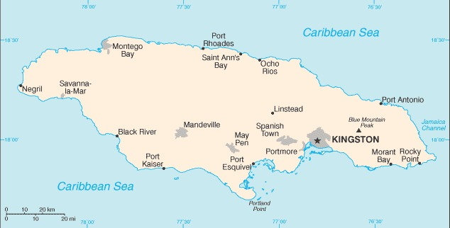
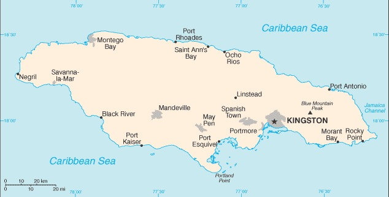

Location
The island is located in the Caribbean sea and south of Cuba

Jamaica is an island that was discovered in 1494 by Christopher columbus
The England country took over the island in 1655 and started to make an economy that was based on sugar, cocoa, and coffee.
African slaves were taken to this country to replace the native tino who were in that country for centuries
Slaves were later freed because slavery was abolished in 1834 and became framers because of how deep the plantation roots were there
Jamaica gained independence from Britian and joined them along with other countries to form a ground called Federation of the West indies in 1958.
Jamaica fell away from the group in 1961 and gained full independence the next year in 1962.
In todays world with Jamaica, there is some violent crimes along with drug smuggling and have some problems in the poverty areas that the government are having challenges with.
There are many beautiful rural and tourist areas that contribute to the economy, they are very safe and well protected.
The island is located in the Caribbean sea and south of Cuba
The climate for Jamaica is usually hot, humid, and tropical
Jamaica has a population of 2,816,602 people
Jamaica has three main ethnic groups with 92% of Black, 0.8% of east indian, and 6.1% of mixed
Thier main language is english and english patios
Alot of people like to say that Jamaicans speak broken english with thier accent
Jamaica is not the wealthiest county even though it does has its nice areas.
They depend on thier income by mostly tourism, remittances, alumnia.
However, thier country economy has grown atleast 1% over the years
In 2016, thier enconomy had got to 1.6%, but in 2017 it decreased to 0.9% because of the the disatiers brought by the wheater.
Source: Wikipedia
$15.847 billion